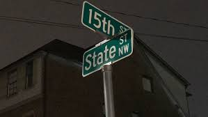

Why? Here is what Reed, a Georgia Teach graduate had to say in regard to why the gentrification in Home Park is hurtful and why it is imperative that this area remains affordable for students: “I think there’s a few distinct factors at play. You’ve probably heard of me complain of the space age looking houses—like 4 stories tall with a single couple living in there with Teslas. I kind of see these people as the textbook gentrification homes. It seems like these people come in looking to take advantage cheap land and property taxes (which is kind of funny because them building those types of houses actually ends up raising their property taxes in the long run). It seems like these people are also kind of hands off when it comes to the community; they keep their yards neat, but they’re typically the ones filing complaints about trashcans on the curb of calling the cops for noise complaints. To me, they feel like outsiders.

The developments such as Atlantic Station and M-Street also cause a lot of property tax increases. I’m glad that 14thstreet was repaved a few years back and I’m glad that the city finally did something about the deathtrap that was 10th and Northside (although they didn’t really bother me before). It does, however, seem like the taxes get collected by the city and get reinvested outside of the neighborhood. On one hand, I’m glad that they haven’t paved Hirsch behind Barbie(the name of the house Reed lived in for his time in college) because it keeps Home Park shitty, but it’s frustrating that the rent at Barbie went up about $100/person/month from the time that I moved in till when I moved out in the name of increasing property taxes. My landlord is a fair guy and isn’t out to take advantage of us because we’re good tenants for him. He never hiked rent due to increased demand, but any time property taxes went up, our rent went up so that he can maintain his margins and still pay the mortgage. I think it was between 2018 and 2019 that the property taxes for Barbie went up by 20% in one year. While some people want the taxes to go up so that the roads and stuff get fixed, you’ve got to look at the long game. Raising the taxes (which are a function of property values) kind of starts an exponential circle of suck kind of increase: the taxes go up to improve the area. Once the area improves, the value goes up. Once the value goes up the taxes are higher (remember, function of value). Once the value/taxes go up, the rent goes up because landlord mortgage payments are way less fluid (think, most people get a 30 year mortgage) and their margins are more or less fixed. Incremental increases like this start to add up faster than the rate of inflation and students like us that really need affordable housing that renting in Home Park provides start to get priced out. I want the roads to stay crappy so that outsiders think it’s a hellhole of a place to live and the property values stay low so that the taxes stay low and the rent in turn. Georgia Tech’s failure to provide affordable housing for its growing student population has caused a lot of these problems. On campus housing is great (considering the convenience), but it’s not worth nearly as much as they think it is. For a bunch of old buildings that have been long paid for, they have ridiculously high operating expenses, or the Institute is trying to use the Department of Housing as a revenue generator for other departments (which is wrong for a whole host of other reasons). The increasing student population has created a housing crisis and off campus housing is trying to meet the demand. That’s all find and dandy, but I think they forget the different needs of the student population compared to regular city dwellers (this is where the stupid, expensive, luxury apartments that are really out of touch with the needs of the local population come in).” Thus, the bougie apartments and high-end four-story houses are not needed for the population that lives in the area. Home Park population is undergrad/graduate students, young families, recent graduates, and professors. Keep Home Park shitty to allow this population the chance to afford housing to continue their lives. The people of Home Park care about their homes. In the houses I am in contact with, the value of the homes has increased because of the renters, and they do their best with the money they have to make it home. For some of the students, including myself, Home Park is the only place I can afford. If it continues to increase in rent, the population will have to move farther away from Georgia Tech.